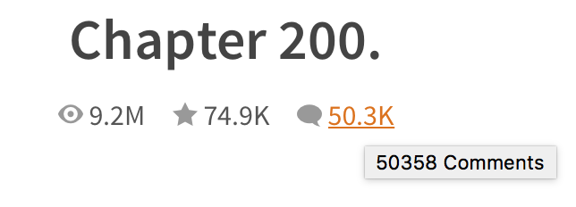
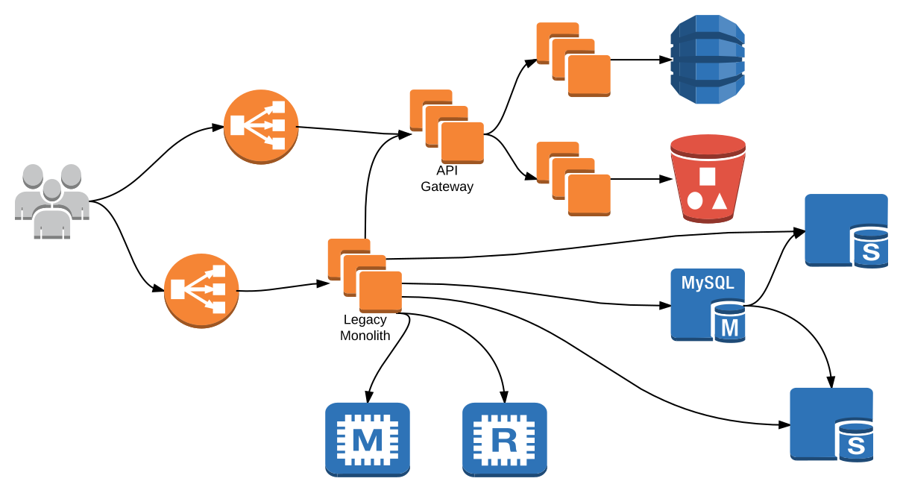
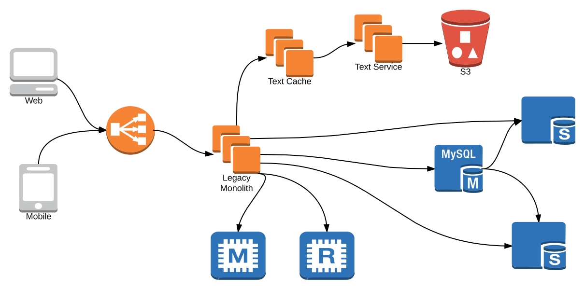

Comments


lets people discover and share stories about the things they love.
And a billion comments...
In a distributed system, "a local view from the perspective of one participant". A manager coordinates the actions of many supporting actors to complete a task.
Controller service (API gateway) fetches content from many dependencies, aggregates results into a single response for client.
"Coordination from a global multi-participant perspective, without a central controller." Each actor both publishes events of potential interest to other actors and subscribes to events of interest from other actors. A task is completed when all supporting actors have finished reacting to the seed event and all consequently published events.
Each service has all data necessary to process a request, broadcast updates to other services.




Given unreliable infrastructure, and message-passing services, do you have...
Options:
| If you have this anomaly | Processing must be... |
|---|---|
| Out of order messages | Commutative |
| Duplicate messages | Idempotent |
| Distributed merges | Associative & Commutative |
| At most once delivery | Able to recover lost messages 🌈🦄 |
Intelligent message processing allows simple messaging infrastructure
State-based CRDTs (a.k.a. convergent RDTs, CvRDTs) transfer complete state
Merge functions must be:
Merge function example: MAX
A MessageHandlerFunc will be invoked for every message received:
type MessageHandlerFunc func(ctx context.Context, msg string) error
A MessageHandlerDecorator facilitates creating messaging middleware:
type MessageHandlerDecorator func(sqsconsumer.MessageHandlerFunc) sqsconsumer.MessageHandlerFunc
middleware.DefaultStack(ctx, sqs) sets up sane defaults: Let processing run as long as necessary & retry messages on handler error.
sqsconsumer.NewConsumer(sqs, handler).Run(ctx) runs a consumer loop: Receive messages in batches (save $), graceful exit on ctx.Done(), handler goroutine per message, backpressure.
sqsconsumer message handler = CRDT merge function
Associative, commutative, idempotent message processing!
Out of order? Duplicate delivery? Retries? Delays? No Problem!
Expect little of the queue, so switching queue is trivial. Only demand at least once delivery - lost messages invalidate everything.